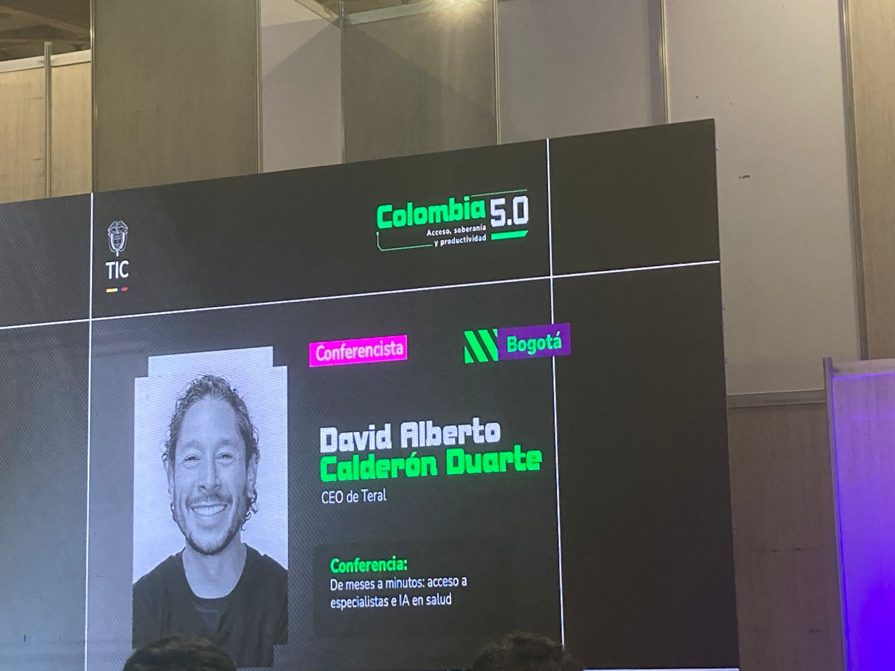
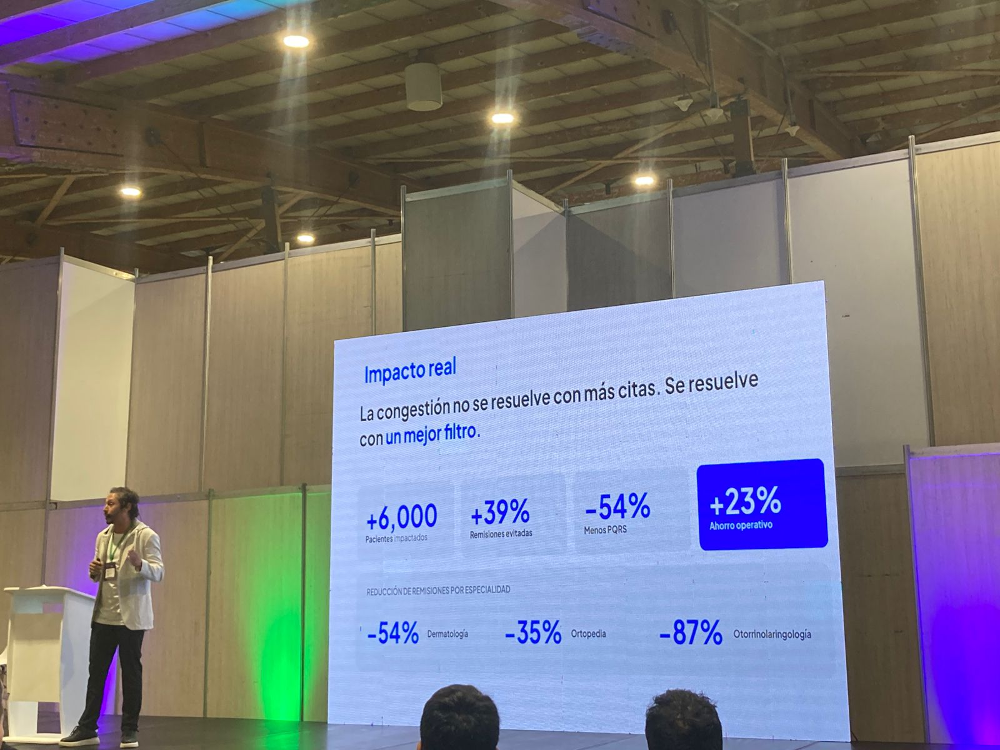
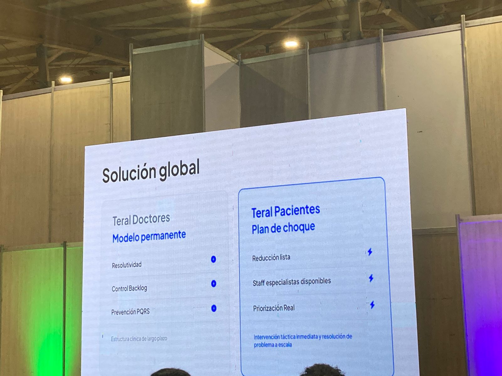
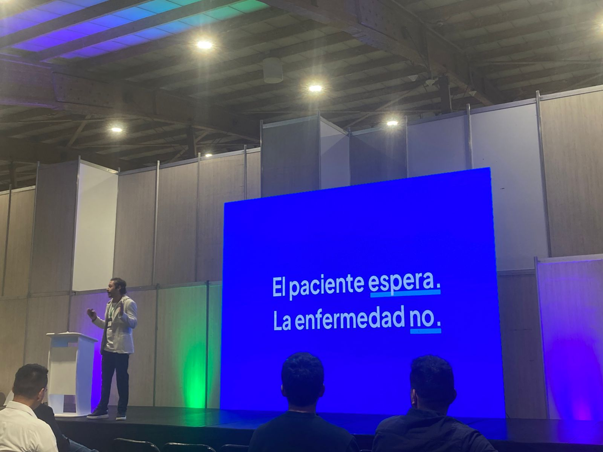
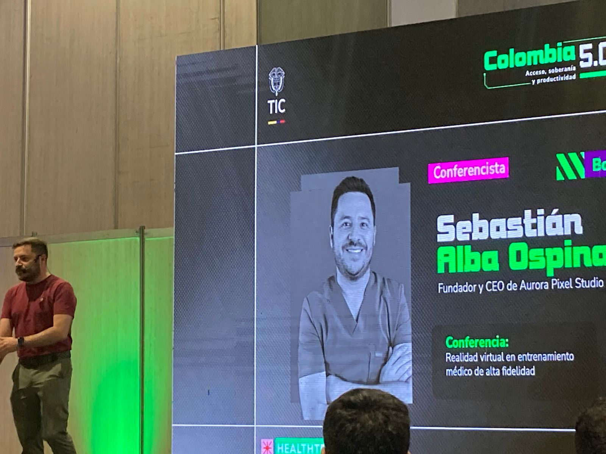
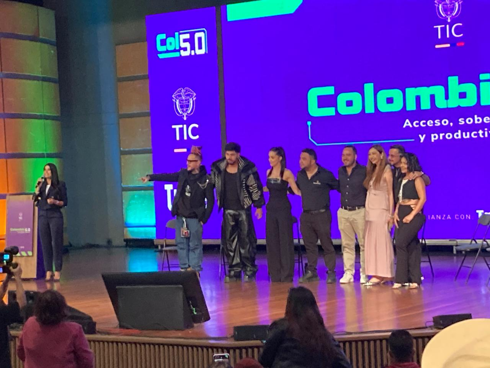
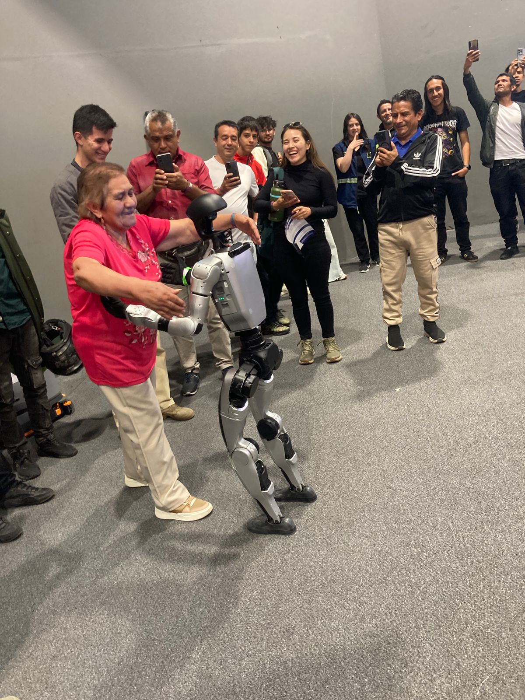

Colombia 5.0 es un evento nacional enfocado en innovación, inteligencia artificial, transformación digital y desarrollo tecnológico. Este sitio tiene como objetivo informar y compartir los aprendizajes obtenidos durante el evento.
ExplorarConferencista: Ing Sebastian Alba Ospina y Dr David Alberto Calderón Duarte
Las conferencias abordaron cómo la inteligencia artificial está transformando el área de la salud mediante herramientas como la realidad virtual para simulaciones médicas y aplicaciones móviles para diagnóstico eficiente.





Conferencista: Carlos Mario, Andrés Atehortúa, Camilo Cuervo, Aida Cortés, Juan Sebastián Giraldo, Juan Pablo Cardona
Las redes sociales ya no son solo plataformas para compartir contenido; son espacios donde las empresas construyen relaciones, generan confianza y crean oportunidades de negocio. Un error común es pensar que publicar mucho significa hacer buen marketing. La realidad es que el contenido efectivo no se mide por la cantidad, sino por el valor que aporta a la audiencia.

| English | Español | Definición |
|---|---|---|
| Cloud Computing | Computación en la nube | Servicios digitales ofrecidos por internet. |
| Machine Learning | Aprendizaje automático | Sistemas capaces de aprender automáticamente. |
| Cybersecurity | Ciberseguridad | Protección de sistemas y datos digitales. |
| Big Data | Grandes datos | Procesamiento masivo de información. |
| Artificial Intelligence | Inteligencia Artificial | Tecnología que simula inteligencia humana. |
| Software | Software | Programas y aplicaciones digitales. |
| Hardware | Hardware | Componentes físicos del computador. |
| Database | Base de datos | Sistema organizado de información. |
| API | Interfaz de programación | Permite comunicación entre sistemas. |
| Frontend | Frontend | Parte visual de una aplicación web. |
| Backend | Backend | Lógica interna de un sistema. |
| Blockchain | Cadena de bloques | Tecnología segura de registros digitales. |
| Data Science | Ciencia de datos | Análisis avanzado de información. |
| User Experience | Experiencia de usuario | Percepción del usuario al usar un sistema. |
| User Interface | Interfaz de usuario | Diseño visual de interacción. |
| Responsive Design | Diseño responsivo | Adaptación a diferentes pantallas. |
| Framework | Framework | Estructura reutilizable de desarrollo. |
| Encryption | Encriptación | Protección de información mediante códigos. |
| Algorithm | Algoritmo | Conjunto de pasos lógicos. |
| Network | Red | Conexión entre dispositivos. |
| Innovation | Innovación | Creación de soluciones tecnológicas. |
| Automation | Automatización | Procesos realizados automáticamente. |
| Developer | Desarrollador | Persona que crea software. |
| Application | Aplicación | Programa informático. |
| Digital Transformation | Transformación digital | Integración de tecnología en empresas. |
| Virtual Reality | Realidad virtual | Entornos digitales inmersivos. |
| Augmented Reality | Realidad aumentada | Elementos digitales sobre el entorno real. |
| Programming | Programación | Creación de software mediante código. |
| Software Engineer | Ingeniero de software | Profesional que desarrolla sistemas. |

La ética en la tecnología empresarial es fundamental para garantizar el uso responsable de herramientas digitales y de inteligencia artificial. Actualmente las empresas manejan grandes cantidades de datos, por lo que deben proteger la privacidad y seguridad de los usuarios. La automatización y la inteligencia artificial permiten optimizar procesos, pero también generan desafíos relacionados con el empleo y el impacto social. Como futuros desarrolladores de software, tenemos la responsabilidad de crear soluciones tecnológicas seguras, inclusivas y transparentes.